Гид по первой поездке в лагерь
Как устроены современные детские лагеря — в чём стоит доверять, а что лучше проверить. Как выбрать интересную смену, настроить ребенка на поездку и собрать чемодан с помощью проверенных лайфхаков.
Первая поездка в лагерь часто волнует родителей больше, чем детей. Пока ребёнок ждёт приключений, взрослые переживают из-за новостей об отравлениях или побегах. Кажется, что отдавая ребёнка в руки незнакомых людей за забором лагеря — контроль теряется. Тревога в этой ситуации естественна, но она не должна лишить ребёнка новых открытий, друзей и тех самых историй из лагеря, которые спустя годы он будет вспоминать с улыбкой.
Современные лагеря устроены так, чтобы свести риски к минимуму — и всё же слепое доверие так же опасно, как и излишний контроль. Родители должны выбрать надёжных организаторов и подготовить самого путешественника.
Тогда смена станет для всей семьи ценным опытом, а не источником стресса.
О чём беспокоятся родители
Мы провели опрос среди родителей, чьи дети отдыхали в лагере «Восход» Томской области, который называют «Сибирским Артеком». Мамы и папы рассказали, какие вопросы и сомнения возникали у них перед первой поездкой ребёнка. На основе этих ответов мы выявили самые волнующие темы и составили план гида, пройдя по которому вы сможете избежать многих ошибок.
Как выбрать надёжный лагерь
Современные лагеря схожи по инфраструктуре, но сильно различаются по масштабу, расположению и стоимости. Федеральные центры «Артек», «Орлёнок» и «Океан» — это эталон качества с безупречной репутацией и десятилетиями опыта. Они расположены на морском побережье, поэтому путёвки туда стоят дороже.
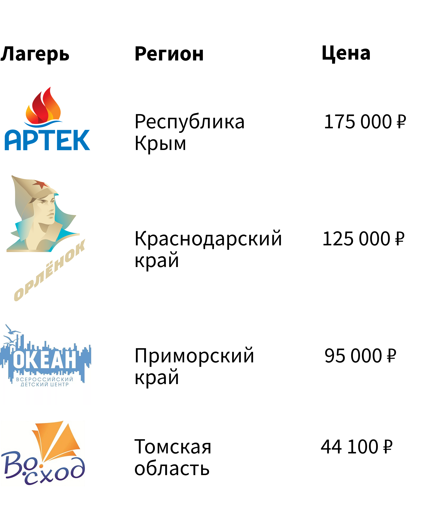
Стоимость летних смен на 21 день в 2026 году.
Данные федеральных центров и региональных баз отдыха
Для первой поездки родители всё чаще выбирают лагеря в своём регионе. Это помогает снизить тревогу и значительно сэкономить на дороге.
В каждом субъекте России достаточно качественных баз отдыха, но при выборе важно самостоятельно убедиться в их надёжности.
Из чего складывается цена
Разброс цен часто пугает, но стоимость путёвки — это прежде всего страховка безопасности. Если отдых стоит подозрительно дёшево, значит организаторы сэкономили на одном из ключевых пунктов.
Около 30% суммы уходит на пятиразовое питание по СанПиНу. Остальное покрывает круглосуточную охрану, дежурство врачей и обучение вожатых в специальных школах. Профильные смены стоят дороже простых оздоровительных из-за расходов на специальное оборудование и приглашённых экспертов.
Проверяем лагерь в госреестре
Первый шаг к спокойствию — найти базу в региональном реестре организаций отдыха. Если лагеря нет в списке, он работает нелегально.
Перед открытием каждую смену принимает межведомственная комиссия. Специалисты МЧС, Роспотребнадзора и Росгвардии проверяют всё — от исправности пожарной сигнализации до квалификации поваров и наличия справок у вожатых.
Даже привычные традиции меняются ради безопасности. К примеру, лагерный «огонёк» теперь проводят с гирляндами или фонариками телефонов вместо костра.
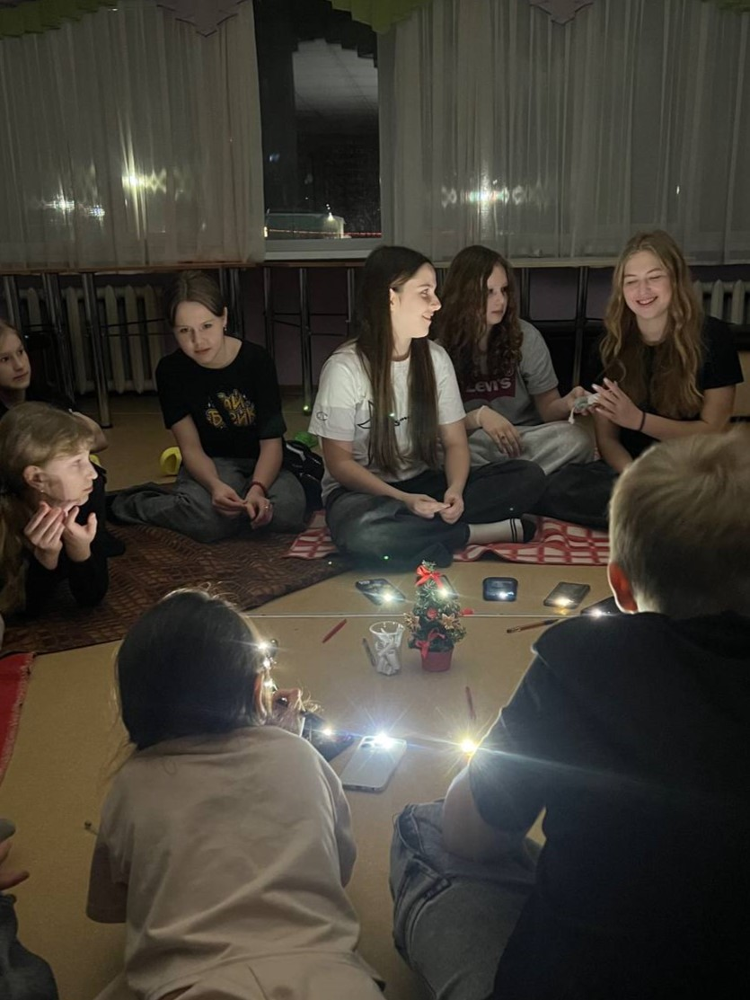
Так проходит «огонёк» — соблюдаем правила пожарной безопасности и помогаем детям сосредоточиться на живом общении, пока их телефоны выполняют роль свечей для атмосферы
Связываемся с руководством
Убедитесь в профессионализме тех, кто руководит лагерем — безопасность начинается с них. В надежных лагерях с родителями всегда заключают официальный договор, где прописана ответственность сторон. На протяжении всей смены у вас должен быть доступ к общению с руководителем смены или начальником лагеря.
Поговорите с руководителем напрямую
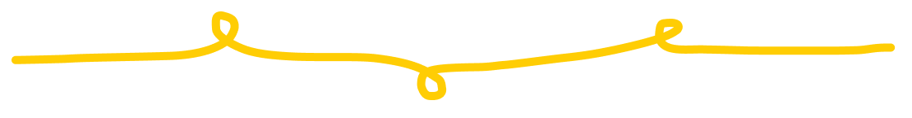
Условия проживания
Условия проживания стоит изучить заранее на сайте лагеря. Узнайте, где именно будут жить дети, какие в корпусах удобства, по сколько человек размещают в комнатах. Не стесняйтесь задавать вопросы, которые важны для комфорта вашего ребёнка. Например, если у него аллергия, заранее попросите заменить перьевую подушку на синтетическую.
Медицина и гигиена
При заезде каждый ребёнок предоставляет медицинскую справку по форме 079/у, данные о прививках и результатах анализов. Такой фильтр защищает коллектив от распространения инфекций.
В первый день смены врачи проводят обязательный осмотр, проверяют чистоту кожи и волос.
В начале и в конце каждой смены медики обязательно измеряют рост и вес всех детей. Эти данные заносят в медицинские карты, чтобы оценить оздоровительный эффект отдыха.
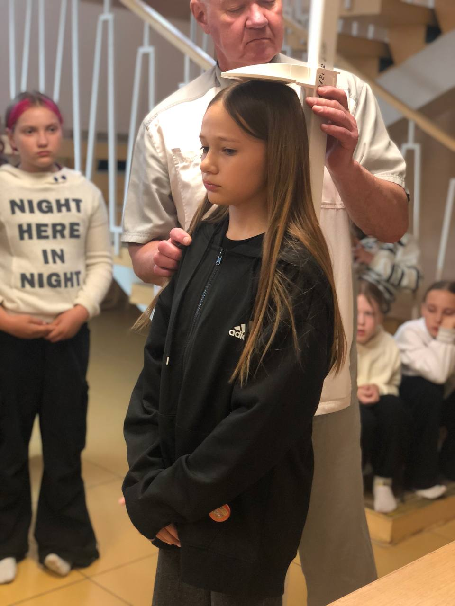
Простые замеры помогают ребёнку познакомиться с медиками. После этого дети меньше боятся врачей и легче говорят о своих проблемах
В лагере круглосуточно дежурят квалифицированные медики и карета скорой помощи. Вожатые не имеют права самостоятельно принимать решения о лечнии. Они могут лишь проследить, чтобы ребёнок вовремя принял лекарства, переданные родителями или врачом.
Вожатые обязаны отвести ребёнка в медпункт при любой жалобе, даже если он приходит к врачу десятый раз за день. Мы понимаем, что живот может заболеть не только от скуки, поэтому никогда не игнорируем слова детей.
Чистота в лагере поддерживается по СанПиНу. В жилых корпусах и комнатах дважды в день проводят влажную уборку. Правила гигиены соблюдаются строго — от мытья рук перед столовой до ежедневного посещения душа.
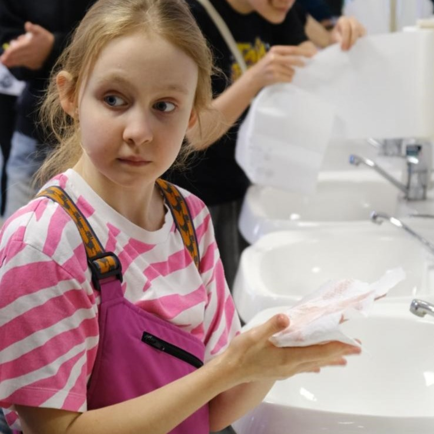
Обязательно моем руки перед едой и бежим показывать вожатому
Обычно в лагерях организовано общее пятиразовое питание: завтрак, обед, полдник, ужин и второй ужин. Меню составляется по государственным нормам и строго соблюдается. Если у ребёнка есть пищевая аллергия или непереносимость продуктов, обязательно сообщите об этом организаторам при бронировании путёвки. Вы имеете право заранее попросить меню на смену, чтобы убедиться в его качестве.
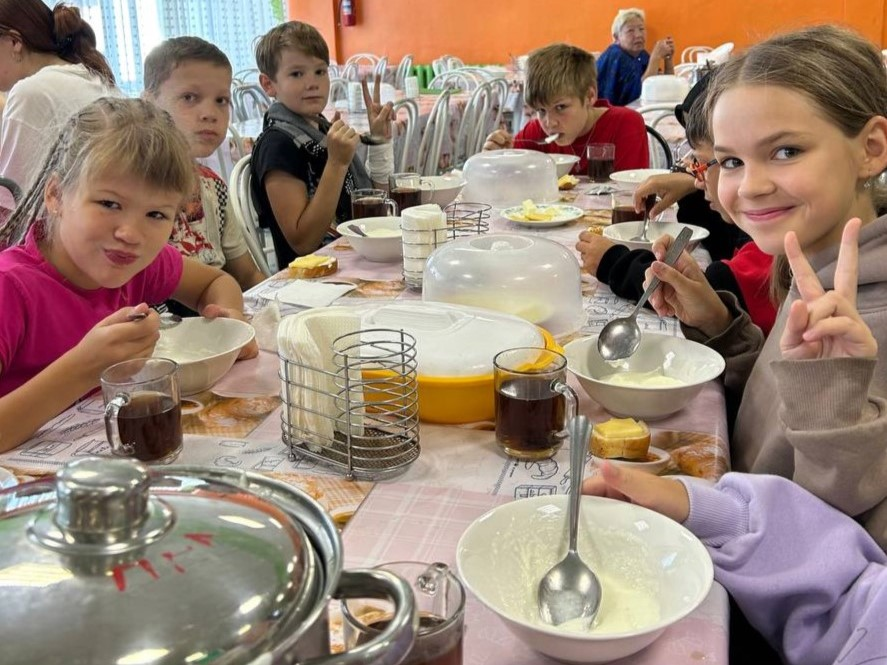
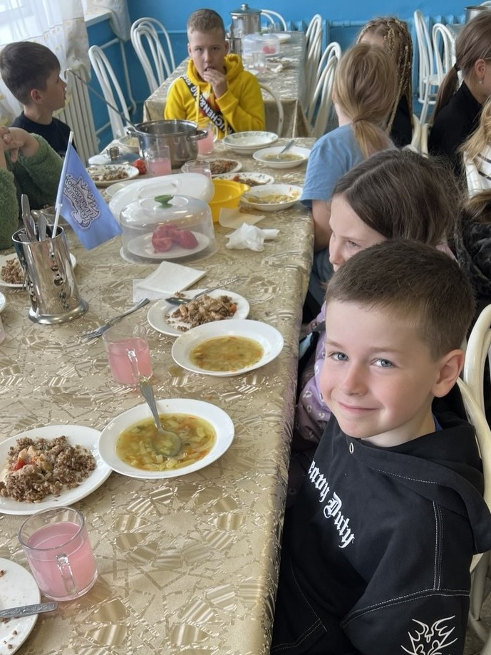
В ежедневный рацион обязательно входят мясо, свежие овощи, фрукты и молочные продукты
В каждом лагере есть список запрещённых продуктов. Часто родители пытаются передать детям «витаминки» в виде ягод или фруктов, но в комнатах нет условий для их хранения. Забытые в тумбочке продукты быстро портятся и привлекают насекомых. В худшем случае ребёнок может съесть несвежий продукт и отравиться. Не пытайтесь обойти систему ради сомнительной пользы.
Питание в лагере сбалансировано так, чтобы детям хватало всех необходимых веществ
Несмотря на тревожное эхо лагерей из прошлого, современные системы детского отдыха обеспечивают высокий уровень безопасности. Чёткий график, правильное питание и отсутствие гаджетов помогают детям окрепнуть. Лагерь становится эффективной профилактикой гиподинамии и лишнего веса. Все возможные риски в организованном коллективе компенсируются физическим и психологическим здоровьем ребёнка.
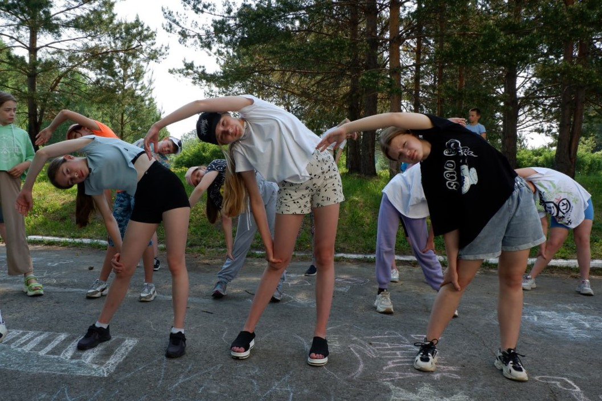
Каждое утро — зарядка на свежем воздухе
Кто будет следить за детьми
Большая часть успеха смены зависит от вожатых. Важно убедиться, что в лагере работают подготовленные специалисты, а не старшеклассники на подработке. Чтобы вы могли доверять персоналу, важно понимать, как устроена система их отбора и обучения.
Школа вожатых и строгий отбор
Обучение длится минимум месяц и включает теорию и практику. Вожатые изучают возрастную психологию, этапы развития смены и методики разрешения конфликтов. В конце обучения они сдают экзамен и только после него получают допуск к работе с детьми. Также в лагерь приезжают практиканты педагогических вузов, которые проходят дополнительную подготовку перед заездом.
Юридическая ответственность и медицина
Все сотрудники лагеря трудоустроены официально и несут персональную ответственность за детей. Перед началом сезона каждый вожатый проходит полный медосмотр и сдает санитарный минимум. Также администрация требует справки об отсутствии судимости и проверку у нарколога. Вы всегда можете уточнить у руководства, являются ли вожатые совершеннолетними и есть ли у них необходимые допуски.
Границы и психологический комфорт
Вожатые заботятся о детях и решают их бытовые проблемы. Для малышей они становятся «временными родителями», удовлетворяя потребность в поддержке и тактильности.
Однако в педагогике лагеря есть важное правило — настоящей дружбы между вожатым и ребёнком быть не может. Из-за неравенства власти это всегда отношения «взрослый — ребёнок». Соблюдение этой дистанции защищает детей от манипуляций.
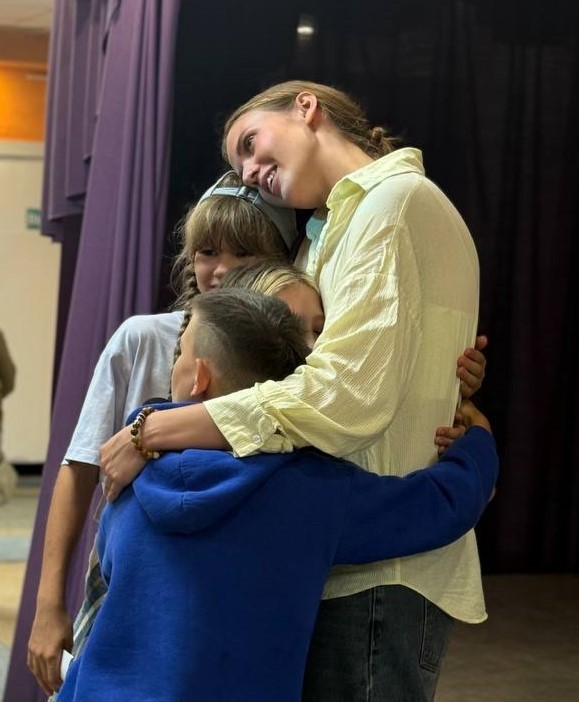
Для малышей особенно важны объятия и тактильность, эту потребность тоже закрывают вожатые
Вожатые детям не друзья
Вожатые — молодые люди, которые искренне вовлечены в процесс. Для них работа — это тоже творчество. Если они будут действовать строго по инструкции, смена не понравится никому. Они умеют веселиться вместе с отрядом, но при этом всегда остаются на посту.
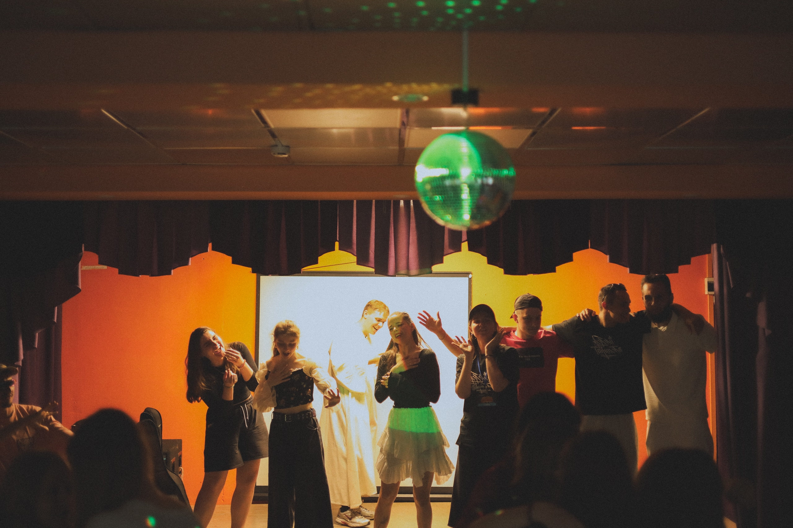
Вожатые отрываются на последней дискотеке вместе с детьми, но при этом контролируют ситуацию в зале
На каждом отряде обычно работают двое вожатых разного пола. Такое распределение помогает удовлетворить разные потребности детей. Кому-то в сложной ситуации легче довериться мягкой поддержке девушки-вожатой, а кому-то важен авторитет парня.
Это создает сбалансированную атмосферу и помогает решать деликатные вопросы, которые ребенок может постесняться обсудить с родителями.
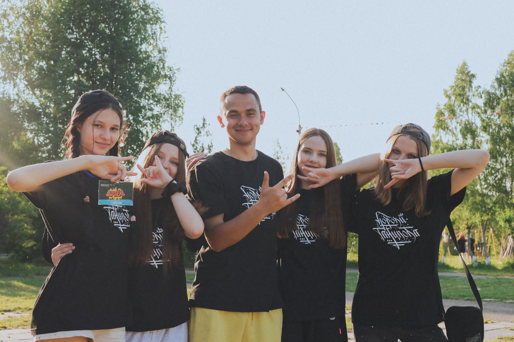
Вожатый противоположного пола часто становится для подростков значимым наставником
Какую смену подобрать
Когда вы убедились, что лагерь безопасен и соответствует нормам, следующий шаг — выбор смены. Сейчас есть варианты на любой вкус — танцевальные, творческие, языковые, спортивные и даже православные.
Часто родители подбирают смену «под себя» — ту, которая кажется им полезной. Например, ребёнок хочет играть в футбол, а его отправляют учить английский по два часа каждое утро. В таком случае лагерь не принесёт радости и ребёнок быстро попросится домой.
Лагерь — это отдых и для детей, и для родителей. Чтобы поездка прошла комфортно, выбирайте направление вместе с ребёнком. Учитывайте его возраст, характер и интересы.
Выбирайте смену вместе с ребёнком
Когда определитесь с темой, созвонитесь с организатором и расспросите о программе:
- Какой основной сюжет смены?
- Как устроено расписание дня?
- Сколько времени дети могут просто отдохнуть в комнатах?
- Что, если ребёнок не любит громкую музыку и не захочет идти на дискотеку?
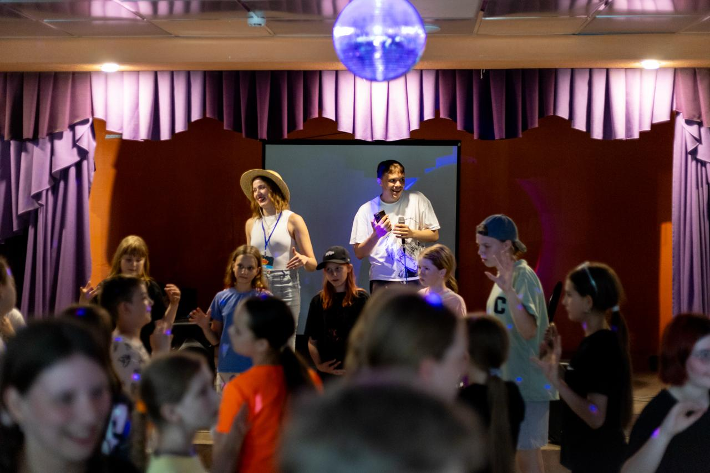
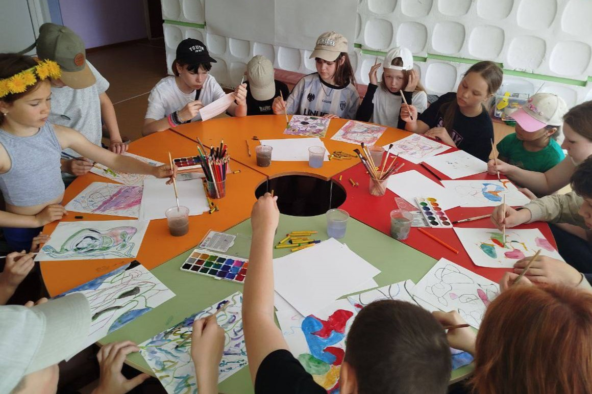
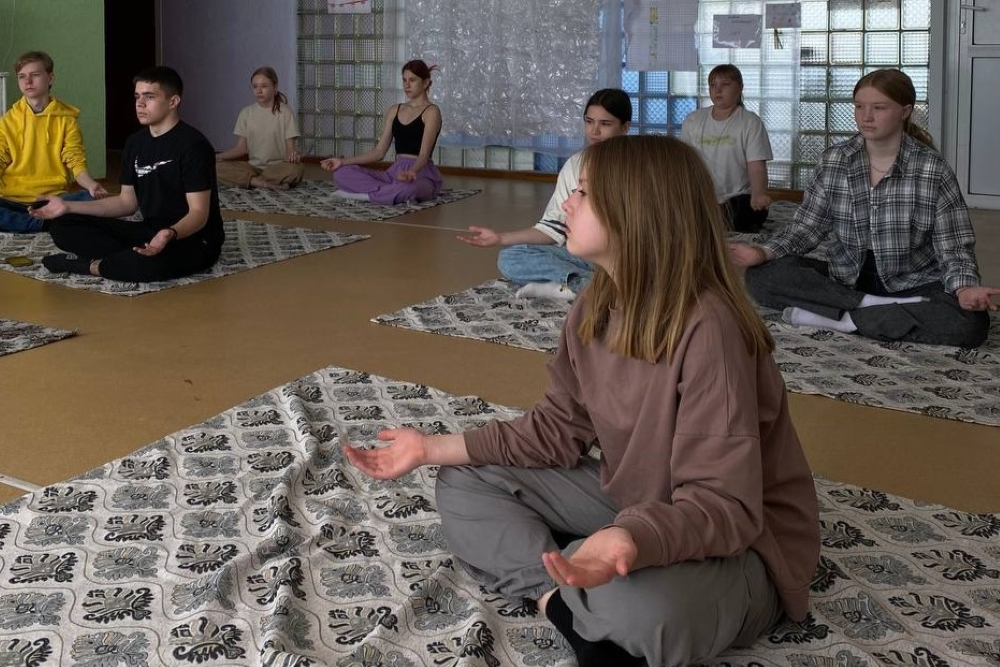
Пока одни отжигают на дискотеке — другие практикуют арт-терапию и медитации
Узнайте, есть ли у детей альтернатива — можно ли вместо дискотеки устроить вечер настольных игр, а вместо тренировки по брейк-дансу пойти на йогу?
В лагерях, где к предпочтениям ребёнка прислушиваются, а не считают их непослушанием, не возникает ощущения принуждения. В лагере важна свобода выбора из нескольких интересных вариантов.
Проверьте, насколько программа адаптивна
Слишком насыщенная программа — тоже нехорошо. Когда день расписан поминутно, у детей возникает сопротивление. Современный лагерь должен давать право на тишину и «ничегонеделание».
Всё самое интересное происходит там, где есть свобода — когда отрядный уголок можно украсить криво, но самостоятельно. Или когда на тихом часу можно самому выбрать — поспать, полистать соцсети или накрасить ногти с соседками. Правила необходимы, но за ними нельзя забывать главное — ребёнку в лагере должно быть комфортно и интересно.
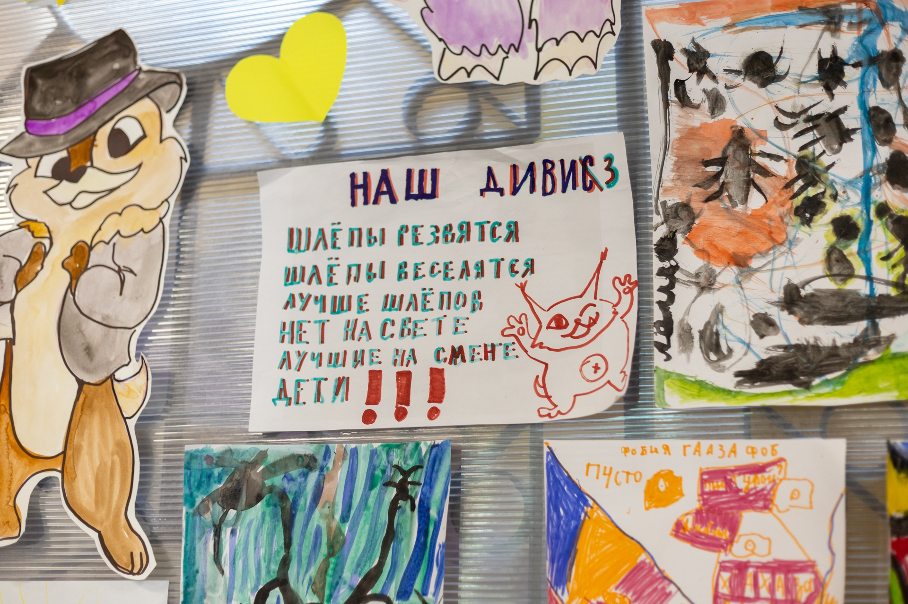
Ребята из младшего отряда самостоятельно оформили отрядный уголок. Хорошо, когда организаторы не тянутся за идеальной картинкой и могут вывесить на стенд любые каляки-маляки
Пройдите тест, чтобы найти баланс между пользой и интересами ребёнка. Система учитывает возраст, опыт самостоятельности и привычный способ проводить свободное время. После прохождения вы получите персональную рекомендацию по выбору профиля смены.
Какая смена подойдёт вашему ребёнку?
Как подготовить ребёнка к разлуке
Подготовку к смене лучше начинать заранее. Ребёнок должен быть готов с психологической и бытовой точек зрения. Лагерь — это не «школа жизни» и не детский сад, а новый опыт, который может пройти комфортно, если родитель позаботится об этом.
Психологическая подготовка
Поездка на смену — это первая серьезная разлука.
Иногда детей «сплавляют» без их согласия. В нашей практике был случай — в лагерь отправили маленького мальчика, который не понимал, где находится, и постоянно искал маму. В таких ситуациях помогает штатный психолог, но это не снимает ответственности с родителей. Ребёнок должен чувствовать вашу поддержку даже на расстоянии.
Ребёнок должен осознавать, что лагерь — это временно
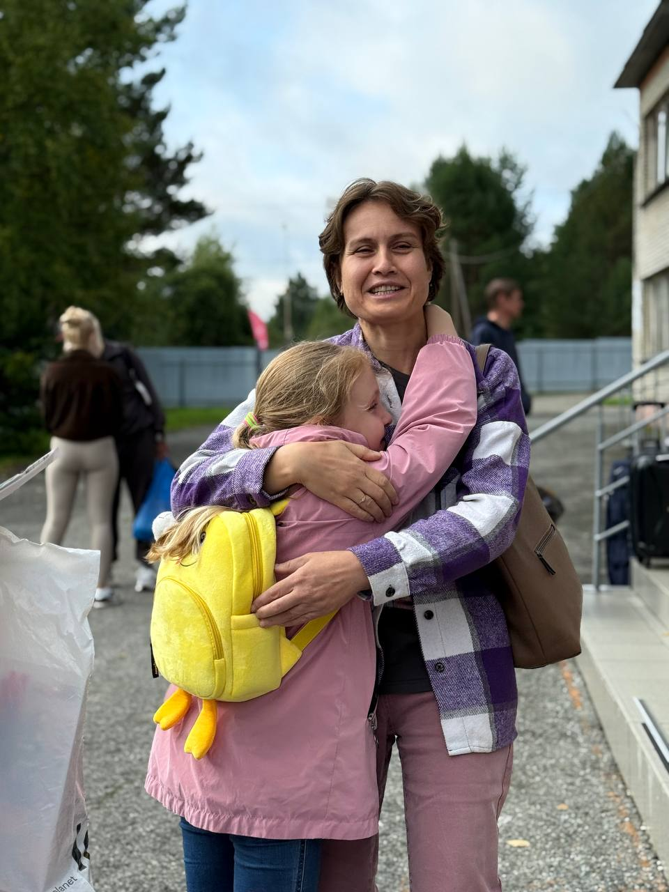
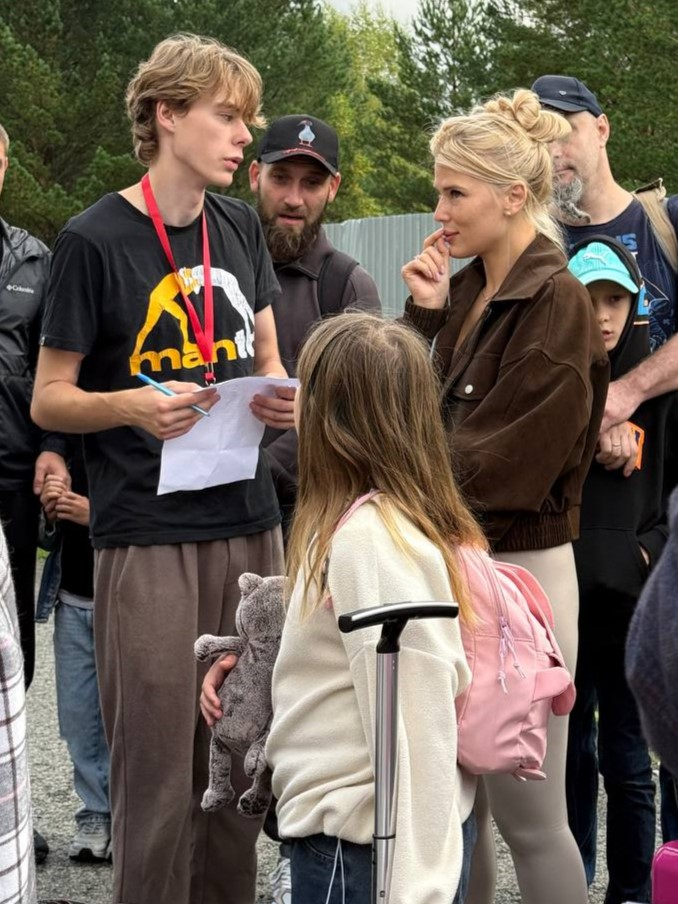
Как только мама отпускает руку, вожатые увлекают ребёнка игрой, чтобы переключить грусть разлуки на предвкушение смены
Если вы не уверены в готовности ребёнка, используйте тактику «малых шагов»:
- лагерь дневного пребывания,
- недалеко от дома,
- короткая смена (10–14 дней),
- поездка вместе с друзьями или родственниками.
Есть ребятишки, которые легко переживают разлуку и адаптируются в новом коллективе. Таких ребят называют «лагерными» — часто именно они вырастают и возвращаются в лагерь вожатыми. Но таких ребят меньшинство — остальным необходима поддержка.
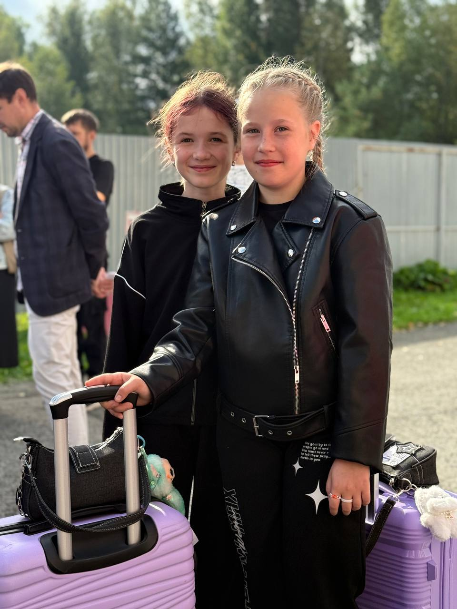
Адаптация проходит легче, если рядом есть знакомый человек
Адаптация на смене
Каждая смена делится на несколько периодов со своими особенностями.
В разное время ребёнку требуется разная степень вашего участия. Понимание этих периодов поможет вам сохранить спокойствие и не мешать педагогическому процессу.
|
Период
№
|
Чувства ребёнка | Что делает лагерь | Как поддержать |
|---|---|---|---|
|
Организационный 1–4 день |
Привыкает к режиму, может скучать по дому и драматизировать события, чтобы привлечь внимание. | Формирует коллектив, знакомит с правилами и вовлекает в игры, чтобы отвлечь от грустных мыслей. | Не названивайте каждые полчаса. Объясните, что адаптация — это нормально, и не обещайте забрать домой. |
|
Основной 5–17 день |
Втягивается в процесс, заводит друзей и раскрывает таланты. Проходит через первые конфликты и притирки. | Реализует программу смены, следит за безопасностью и помогает детям конструктивно решать споры. | Искренне интересуйтесь делами в отряде. Не рассказывайте, как дома скучает собака, чтобы не вызвать приступ тоски. И отдохните сами :) |
|
Завершающий
18–21 день | Грустит из-за скорого расставания с друзьями. Старается запомнить каждый момент и обменивается контактами. | Проводит финальные мероприятия, награждает активных ребят и помогает детям плавно подготовиться к отъезду. | Подготовьте небольшой праздник в честь возвращения ребёнка. Это поможет сгладить горечь прощания с лагерем. |
| После смены | Осознает полученный опыт, часто переписывается с отрядом и применяет новые навыки в жизни. | Собирает обратную связь от родителей, анализирует итоги работы и поддерживает сообщество в соцсетях. | Внимательно слушайте истории и поддержите самостоятельность. Дайте ребёнку время просто отдохнуть. |
Родителям важно отличать временные трудности адаптации от реального крика о помощи. Будьте на стороне ребёнка, но сохраняйте спокойствие и помните, что в лагере его никто не хочет обидеть. Лучшая тактика — оставаться на связи с руководством и наблюдать за ситуацией со стороны, не вмешиваясь без острой необходимости.
Если ребёнок просится домой, проблему нужно решать «с двух сторон». Вожатые внутри лагеря вовлекают его в активности и уделяют больше внимания, а родители поддерживают на расстоянии и напоминают о цели поездки. Главный критерий здесь — время.
Обычно адаптация проходит за три-четыре дня
Если ребёнок настойчиво просится домой пятый день подряд и называет одну и ту же причину, к его словам стоит прислушаться серьезно. Это сигнал, что ситуация вышла за рамки обычного привыкания и требует вашего личного вмешательства.
Опытные организаторы знают, как важна связь с семьёй. Чтобы поддержать ребят, мы используем разные форматы. Например, в нашем лагере работает радио — родители пишут сообщения с приветами, а мы записываем их и включаем детям по утрам.
Бытовые навыки, что важно уметь самому
Лагерь — это отличный тренажер самостоятельности, но к нему нужно подготовиться. Вожатые всегда помогут младшим заплести косички или заправить кровать, но они не обязаны превращаться в нянечек. Чтобы ребенку было комфортно, он должен владеть базовой гигиеной и навыками самообслуживания.
Чему научить ребенка перед сменой:
- Гигиена. Нужно уметь самостоятельно мыться и следить за чистотой своих вещей.
- Порядок. В лагере дети сами убираются в комнатах. Вожатые проверяют чистоту и поощряют самых аккуратных — это приучает нести ответственность за своё пространство.
- Деньги и вещи. Ребенок должен понимать, как распоряжаться карманными деньгами и как не растерять свои вещи в первые три дня.
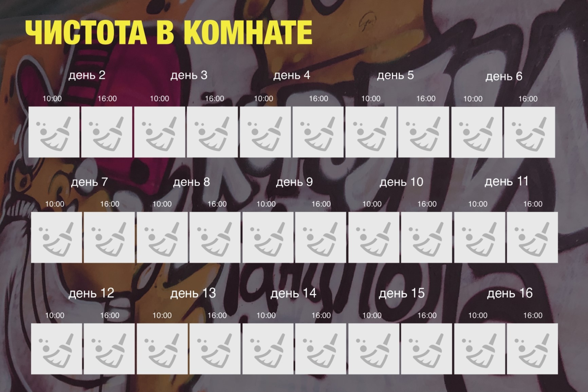
К дверям детских комнат прикреплены такие карточки. Вожатые дважды в день проверяют чистоту и клеят наклейки. Шесть штук подряд приносят приз. Система поощрений превращает уборку в игру и приучает к порядку
Лайфхаки по сбору вещей
Чтобы облегчить ребёнку быт, соберите чемодан грамотно. Эти мелочи сэкономят нервы и вам, и вожатым.
Гигиена и здоровье
Одежда и комфорт
Связь и порядок
Как дети живут в отряде
Лагерь — это уникальное пространство, где ребёнок может примерить новые социальные роли и перестать быть просто сыном своей мамы. С 10–11 лет у детей активно формируются нейронные связи, отвечающие за общение, и лагерь становится лучшим симулятором для их развития.
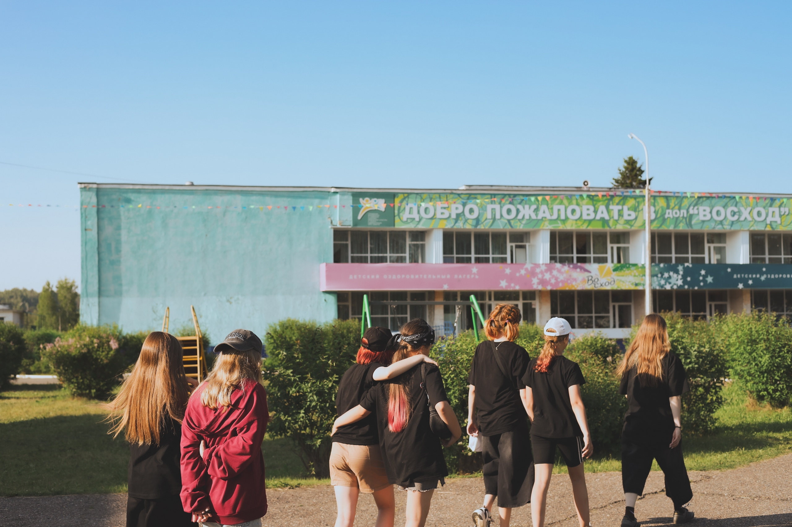
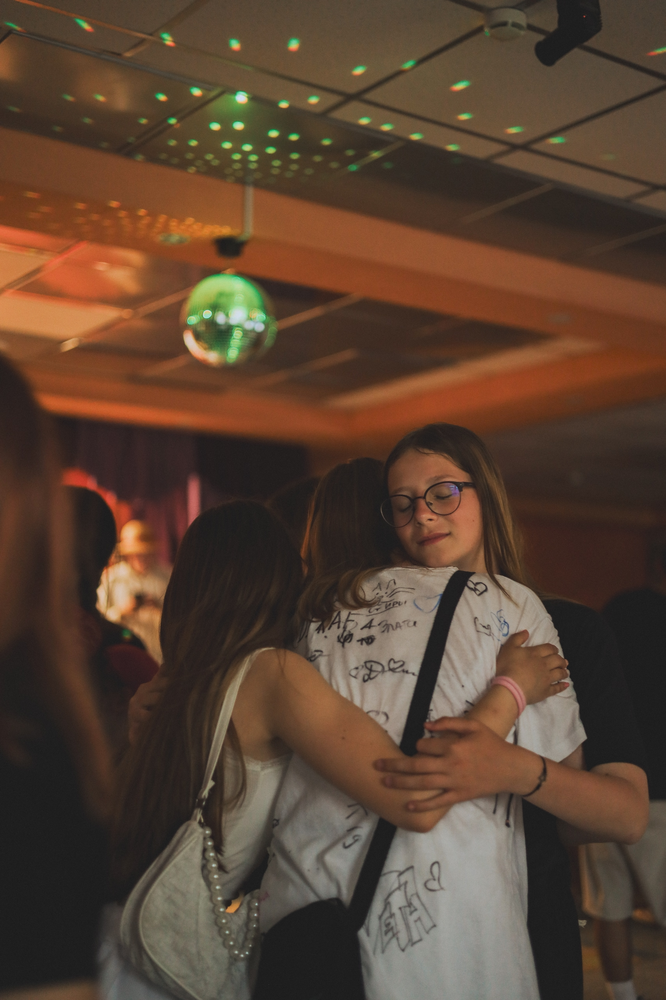
В последние дни смены все ссоры забываются. Ребята говорят друг другу добрые слова и расписываются на футболках на память
В отличие от школы, в лагере дети общаются 24/7. Они попадают в общее пространство с общими задачами и проблемами. Здесь стираются рамки — не важно, кто твои родители и какой у тебя статус в городе. Все находятся в равных условиях, все одинаково волнуются перед выходом на сцену и вместе борются за звание лучшего отряда.
Именно эта искренность позволяет находить друзей на долгие годы, а иногда и встречать первую любовь. Многие родители боятся травли, но в здоровой среде лагеря настоящий буллинг практически невозможен. Травля возникает там, где нет командной работы, а взрослые равнодушны. В лагере дети всегда под присмотром.
Буллинг в лагере практически невозможен
Дети не попадают в «бесконтрольный вакуум», где выживает сильнейший. Вожатые обучены замечать малейшие изменения в настроении отряда и пресекать лишнюю агрессию на корню.
Конфликты — это неотъемлемая часть взросления. Дети учатся отстаивать свои интересы, договариваться и находить компромиссы. Взрослые здесь выступают не как надзиратели, а как мудрые наставники, которые наблюдают за естественным процессом и направляют его.
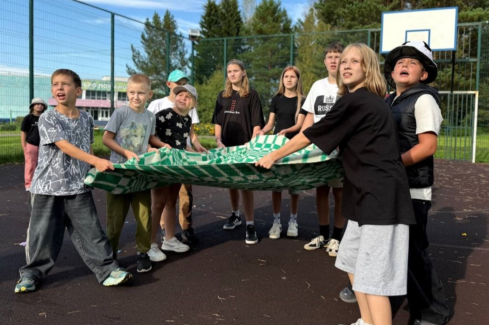
Игры на сплочение — лучший способ профилактики травли. Командная игра, где нужно одеялом поймать воздушный шарик, наполненный водой. Либо вы работаете сообща — либо промокнут все
Мы учим детей, что не обязательно «угождать» всем, чтобы влиться в коллектив. Важно уметь вежливо, но твёрдо обозначать свои границы — как тебя можно называть, а как нет, можно ли брать твои вещи. Уважение к чужим границам — основа порядка в комнате и в отряде.
Лагерь — инвестиция в будущее
Поездку в лагерь стоит рассматривать как вложение в социализацию. За дни смены ребёнок получает опыт, который трудно приобрести дома. Это навыки переговоров, умение разрешать конфликты и самостоятельность в быту. Эти навыки остаются с человеком на всю жизнь.
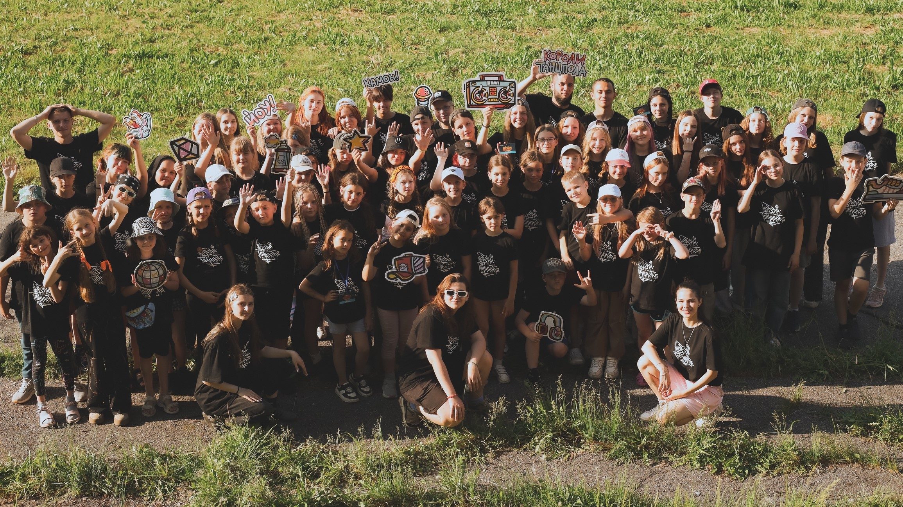
На каждой смене вожатые и дети получают брендированные футболки. В них получается почувствовать себя настоящей командой, а после смены такая футболка становится главным сувениром и напоминанием о прожитых моментах
Красные флаги лагеря — когда от поездки лучше отказаться
Иногда за красивым сайтом скрывается халатность. Если при выборе вы столкнулись хотя бы с двумя пунктами из этого списка, это повод поискать другой вариант.
🚩 Юридические и организационные риски
- Лагеря нет в региональном реестре. Это главный признак нелегальной работы. Такие базы не проходят государственные проверки.
- Размытая ответственность. Организаторы не могут чётко ответить, кто отвечает за медицину или охрану территории.
- Отсутствие медицинского фильтра. У вас не требуют справку 079/у и данные о контактах. Значит, их не требуют и у остальных.
🚩 Проблемы с персоналом и связью
- Несовершеннолетние вожатые. По закону вожатый должен быть старше 18 лет, чтобы нести юридическую ответственность за детей.
- Информационная блокада. Нет возможности связаться с руководством. Лагерь превращается в «чёрный ящик».
- Запрет на посещения. Полный запрет на визиты родителей незаконен. Лагерь может лишь регламентировать время встреч.
🚩 Быт и подозрительные оправдания
- Миф об акклиматизации. Если у половины отряда рвота, а персонал называет это «привыканием к климату», скорее всего, в лагере инфекция.
- Свободный вход. На КПП нет охраны или забор в дырах. Это риск проникновения посторонних или побега детей.
- Отсутствие комфорта. Холодная вода в душе или грязное бельё — это нарушение санитарных норм.
Самостоятельный отдых в лагере станет для ребёнка ценным жизненным опытом, если вы заранее убедитесь в безопасности и легальности выбранного места. Учитесь доверять профессионалам, но сохраняйте контроль и выбирайте направление, которое подходит именно вашему ребёнку.
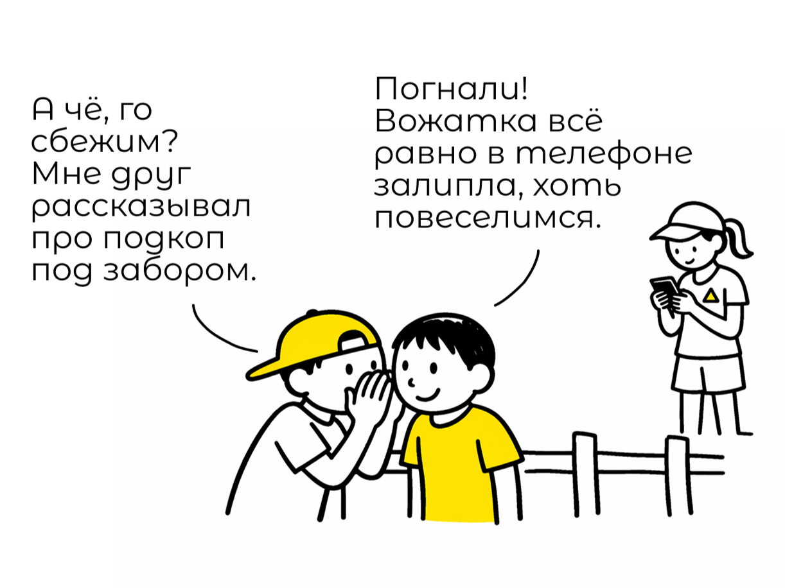
Теперь вы знаете, как убедиться, что отправляете ребёнка в лагерь, где не возникнет такой ситуации 🙂